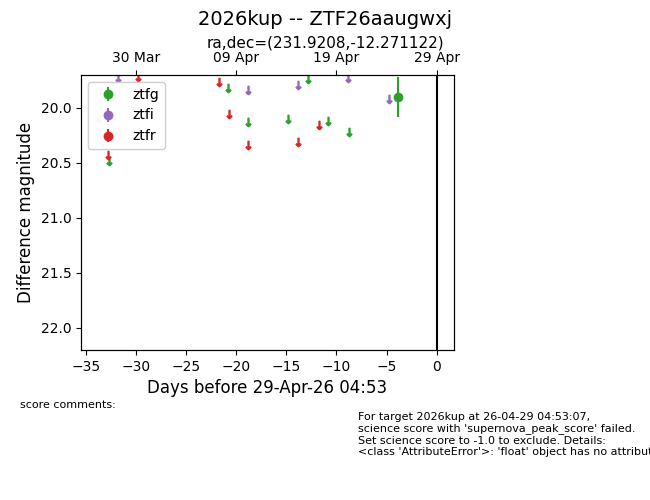
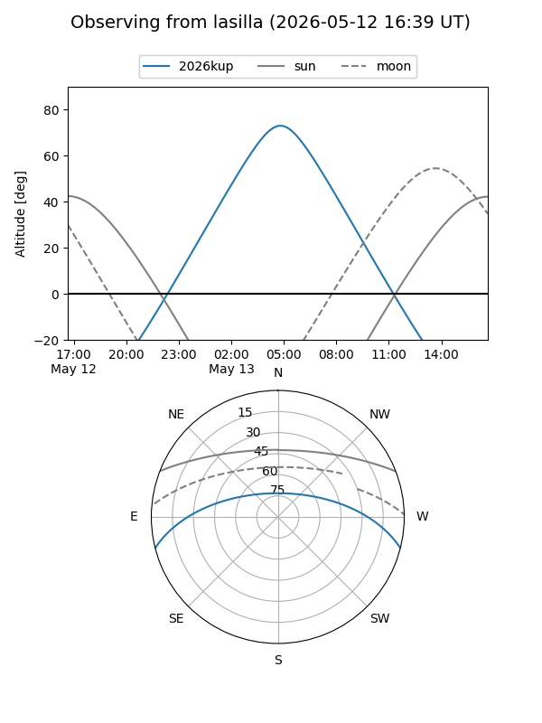
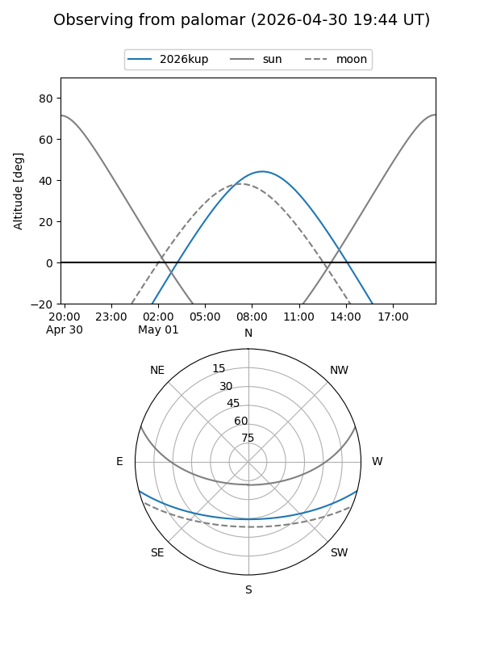
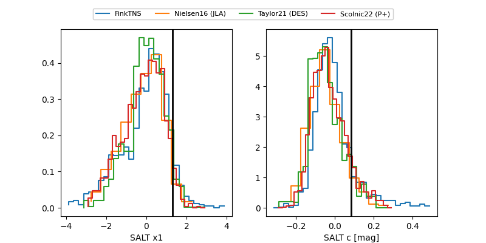

2026kup
Target 2026kup at 2026-04-29 04:55
Aliases and brokers:
FINK: link
Lasair: link
ALeRCE: link
TNS: link
YSE: link
alt names
ZTF26aaugwxj (ztf,fink_ztf)
2026kup (tns,yse)
Coordinates:
equatorial (ra, dec) = 231.9208,-12.27112
equatorial (HMS+DMS) = 15:27:40.99,-12:16:16.04
galactic (l, b) = (351.9394,+35.33447)
Flags:
Photometry:
last ztfg=19.90
1 ztfg detections
Lightcurve

Visibility


Additional plots
